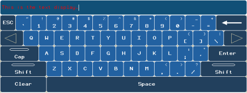
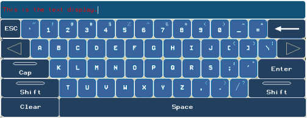
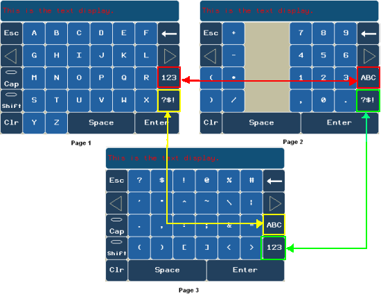
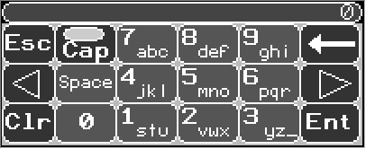
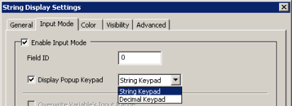
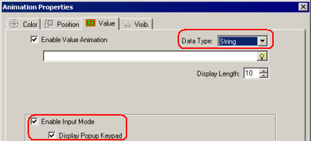

|
|
|
|
|
|
|
|
String Keypads support these different types of layouts: Standard, Alphabetical Order, Compact (Multi-page), and Alphanumeric. These keypads allow you to select an appropriate keypad for your target machine and your user application language.
For String Keypads, use the Cap key and Shift key to place the keypad in Cap and Shift mode. In Cap mode, the letters of the alphabet are in uppercase. In Shift mode, you can access the symbols on the upper right-hand corner of the key.

Vijeo-Designer Runtime does not support multi-touch functions. For example, to access a symbol, you cannot press the Shift key and a symbol key simultaneously. You can only press the Shift key, which turns the light on to indicate that you are in Shift mode, and then press the symbol key that you want.
The Standard Keypad is the most commonly used keypad layout. The Standard Keypad has a different layout for each locale in the user application language: English, Spanish, French, German, and Italian. Each different layout has characters and accents that are specific to the selected language. To change the Standard Keypad layout for another language, change the Locale language in the User Application Language Node.
The image below shows an example of the English Standard Keypad.

The Alphabetical Order Keypad layout is another commonly used keypad layout. The Alphabetical Order Keypad has a different layout for each user application language: English, Spanish, French, German, and Italian. Each different layout has characters and accents that are specific to the selected language. To change the Standard Keypad layout for another language, change the Locale language in the User Application Language Node.
The image below shows an example of the English Alphabetical Order Keypad.

The Compact (Multi-page) Keypad is designed for target machines with screen sizes less than 640 by 480. If the selected Target's screen size is less than 640 by 480, only the Compact (Multi-page) Keypad is available as the system keypad. The Compact (Multi-page) Keypad uses the Alphabetical Order Keypad layout, but the layout is spread out over three separate windows. Buttons on the Compact (Multi-page) Keypad enable the user to switch between the Keypad pages.
The image below shows an example of the English Compact (Multi-page) Keypad.

The Compact (Multi-page) keypad does not support the underscore character.

The Alphanumeric Keypad is designed for target machines with a screen size of 200x80. The alphanumeric keys enable you to enter the 26-letter alphabet (upper and lower case), numbers 0 to 9, the underscore (_) character, and the space character. The following image shows an alphanumeric keypad on a target with a 200x80 screen size.

Select the Cap key to change the letters from lowercase to uppercase.
You can easily set up a String Keypad for your string display or text object. For a string display, make the following selections in the String Display Settings dialog box:
In the Input Mode tab, select the Enable Input Mode and Display Popup Keypad check boxes, and then select String Keypad.

For a text object, make the following selections in the value animation properties:
Set Data Type to String, and select the Enable Input Mode and Display Popup Keypad check boxes.
